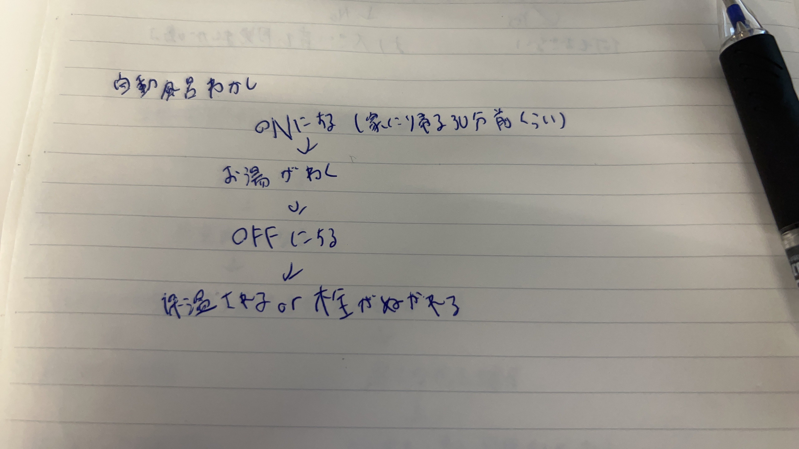

第二回IoTⅠ
①IoTとは何か
IoTとはInternet of Thingsの略であり、物理的なものをインターネットに接続して操作する技術の総称である。
③IoT(遠隔操作)で何ができそうか？グループワークした内容
私は家の鍵や照明などがIoTを使っているので、それらもありました。
④IoT(遠隔操作)で何ができそうか？自分で考えたアイディア

雑ですが、家に帰る前にONにすることでお湯を沸かしてくれるシステムがあるといいなと思いました。